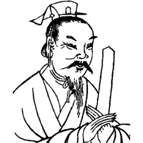
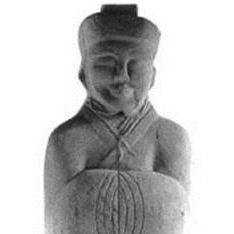
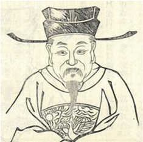
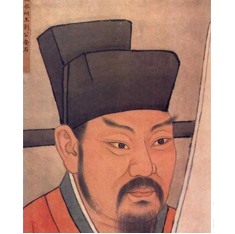

投票时间：
2019年8月27日8时至9月5日24时
投票要求：
每个网络IP地址或微信号每次投票选10名候选人物。
-
 大禹
大禹大禹，约出生在公元前2000多年左右，姓姒，名文命。史称大禹、帝禹，为夏后氏首领，为夏王朝的开创奠定了基础...[详细]
-
 孙叔敖
孙叔敖孙叔敖（约公元前630—593年），姓蔿，名敖，字孙叔，河南淮滨县期思镇人。官至楚国令尹，春秋时期著名的...[详细]
-
西门豹
西门豹，姓西门，名豹，生卒年代不详。战国时期（公元前475—前221年）魏国人，著名的政治家和水利家...[详细]
-
李冰
李冰，战国时期著名的水利工程专家，生卒年代不详。秦昭襄王末年（约公元前256—前250年）任蜀郡太守...[详细]
-
 郑国
郑国郑国，生卒年代不详，战国时期韩国人。著名的水利专家，任韩国水工。秦始皇元年（公元前246年），受命入秦...[详细]
-
召信臣
召信臣，字翁卿，生卒年代不详，安徽寿县人，西汉时期著名水利专家。历任郎中、谷阳长、上蔡长、零陵太守...[详细]
-
 王景
王景王景（约公元30—85年），字仲通，山东即墨县人，东汉时期著名的水利工程专家。历任河堤谒者、徐州刺史...[详细]
-
 马臻
马臻马臻（公元88—141年），字叔荐，陕西兴平人。东汉时期著名水利专家，官至会稽太守。东汉永和五年（公元140...[详细]
-
 姜师度
姜师度姜师度（约公元653—723年），河北魏县人。历任丹陵尉、龙岗令，后升迁易州、沧州、同州等地刺史，官至将作...[详细]
-
 范仲淹
范仲淹范仲淹（公元989—1052年），字希文，江苏苏州人，北宋时期杰出的思想家、政治家、文学家。文官官至参知政事...[详细]
-
王安石
西王安石（公元1021—1086年），字介甫，号半山，江西抚州临川人。官至宰相，北宋时期杰出的思想家、政治家...[详细]
-
 苏轼
苏轼苏轼（公元1037—1101年），字子瞻，号东坡居士，四川眉山市人。北宋时期著名文学家、政治家，官至礼部尚书...[详细]
-
 郭守敬
郭守敬郭守敬（公元1231—1316年），字若思，河北邢台人。元朝时期杰出的科学家，尤擅长水利和天文历算。郭守敬...[详细]
-
 宋礼
宋礼宋礼（公元1361—1422年），字大本，河南洛宁县人。明朝著名水利官员，历任礼部右侍郎、工部尚书。宋礼自幼...[详细]
-
 潘季驯
潘季驯潘季驯（公元1521—1595年），字时良，号印川，浙江湖州市人。明朝时期著名水利学家，历任工部尚书、总理...[详细]
-
汤绍恩
汤绍恩（明朝，具体生卒年代不详），字汝承，号笃斋，四川安岳人。历任户部郎中、德安知府、绍兴知府等职...[详细]
-
 万恭
万恭万恭（公元1515～1591年），字肃卿，别号两溪，江西南昌县人，明朝时期著名水利专家。历任光禄寺少卿、大理...[详细]
-
 靳辅（陈璜）
靳辅（陈璜）靳辅（公元1633—1692年），字紫垣，辽宁辽阳人，清朝时期著名水利专家。历任内阁中书、兵部郎中、河道总督...[详细]
-
 朱轼
朱轼朱轼（公元1665-1736年），字若瞻，号可亭，江西府高安县人。历任刑部主事、浙江巡抚、左都御史、吏部尚书等...[详细]
-
 林则徐
林则徐林则徐（公元1785—1850年），字元抚，晚号俟村老人、福建福州人，清朝时期著名的政治家、思想家。历任湖广...[详细]
-
 张謇
张謇张謇（公元1853—1926年），字季直，号啬庵，江苏南通人，中国近现代著名的实业家、水利家。历任全国水利局...[详细]
-
 张謇
张謇李仪祉（公元1882－1938年），名协，字仪祉，陕西省蒲城县人，我国近代著名水利学家和教育家。历任南京河海...[详细]
 京公网安备11040102700040号
京公网安备11040102700040号